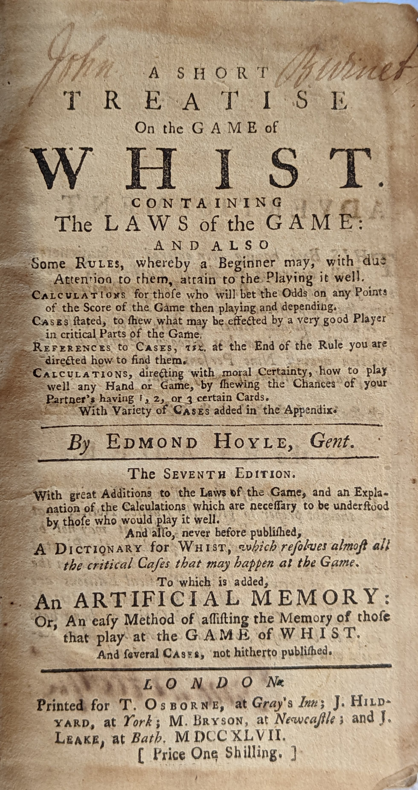

A Descriptive Bibliography of Edmond Hoyle
Copyright © 2014-26 by David Levy
(page updated 2024-11-04)User Guide
Whist.7
A Short Treatise on the Game of Whist, printed for T. Osborne et al, seventh London edition, 1747.
 |
Title: | A SHORT | TREATISE | On the GAME of | WHIST. | CONTAINING | The LAWS of the GAME: | AND ALSO | Some Rules, whereby a Beginner may, with due | Attention to them, attain to the Playing it well. | Calculations for thoſe who will bet the Odds on any Points | of the Score of the Game then playing and depending. | Cases ſtated, to ſhew what may be effected by a very good Player | in critical Parts of the Game. | References to Cases, viz. at the End of the Rule you are | directed how to find them. | Calculations, directing with moral Certainty, how to play | well any Hand or Game, by ſhewing the Chances of your | Partner’s having 1, 2, or 3 certain Cards. | With Variety of Cases added in the Appendix. | [rule] | By Edmond Hoyle, Gent. | [rule] | The Seventh Edition. | With great Additions to the Laws of the Game, and an Expla-|nation of the Calculations which are neceſſary to be underſtood | by thoſe who would play it well. | And alſo, never before publiſhed, | A Dictionary for Whist, which reſolves almoſt all | the critical Caſes that may happen at the Game. | To which is added, | An ARTIFICIAL MEMORY: | Or, An eaſy Method of aſſiſting the Memory of thoſe | that play at the GAME of WHIST. | And ſeveral Cases, not hitherto publiſhed. | [rule] | LONDON: | Printed for T. Osborne, at Gray's Inn; J. Hild-|yard, at York; M. Bryson, at Newcaſtle; and J. | Leake, at Bath, M DCC XLVII. | {Price One Shilling.} |
| Collation: | 12o: π1 [A]2 B–G6 H4 [$½ (−C2) signed; signing G2v as G2, G3 as G2]; 43 leaves, pp. [6 ] [1] 2–80 |
| Contents: | Signature (Page) Reference | Contents | Signature (Page) Reference | Running Titles |
| π1r | title | |||
| π1v | ‘ADVERTISEMENT. | [...] | To the READER. | [...] | [autograph of Edmond Hoyle]’ | |||
| A1r–A2v | ‘[headpiece Spedding H15] | THE | CONTENTS. | [...]’ | A1v–A2v | ‘The CONTENTS.’ | |
| B1r–G4r (1–67) | ‘[headpiece Spedding H09] | A SHORT | TREATISE | On the GAME of | WHIST. | [...]’ | B1v–H4v (2–80) | ‘A ſhort Treatise on | the Game of Whist.’ | |
| on B2r (3), C5r (21), D2r (27), E5r (45), F2r (51), G5r (69), H2r (75) | ‘the Game at Whist.’ | |||
| G4v–H4v (68–80) | ‘[headpiece Spedding H07] | An | Artificial Memory. | OR, | An Eaſy Method of Aſſiſting the Me-|mory of thoſe that play at the Game | of Whist. | To which are Added, | Several Cases not hitherto Publiſh'd. | [...]’ |
| Catchwords: | D4v(32) ing [ing,] |
| Publisher: | Thomas Osborne |
| Printer: | Thomas Gardner (ornaments) |
| Price: | 1s. (title) |
| References: | ESTC T179915, Jessel 799, Rather 29 |
| Copies Seen: | L [1568/6344(1)] |
| Copies Seen in Collections: | L [7917.de.56(1)] (ECCO) (see Osborne.E); O [3843 f.10(1)] (see Osborne.E); O [Jessel f.548(1)] (see Osborne.E); DLC [GV1277.H89 1747] (see Osborne.D); NvLN [GV1277.H69 1747b] (see Osborne.D); TNJ [GV1241.H8.A7] (see Osborne.E); Levy [1769] (see Osborne.E); Levy [2112] (see Osborne.D) |
| Other Copies: | NjP [42845.479.51] |
| Other Copies in Collections: | Beauchene (see Osborne.D) |
| Notes: | I have found no newspaper advertisements that specifically mention Whist.7. Whist.6 continued to be advertised as late as 1747-11-26 in the General Evening Post. There is a publisher's advertisement, Books Just Published by Thomas Osborne (undated, ESTC T16317), that specifically mentions Whist.7.In L [7917.de.56(1)], the title page has been replaced with the section title for whist in Games.1.3. As this appears to be a one-time occurence, I have not created a separate entry in the bibliography for a reissue of Whist.7. |